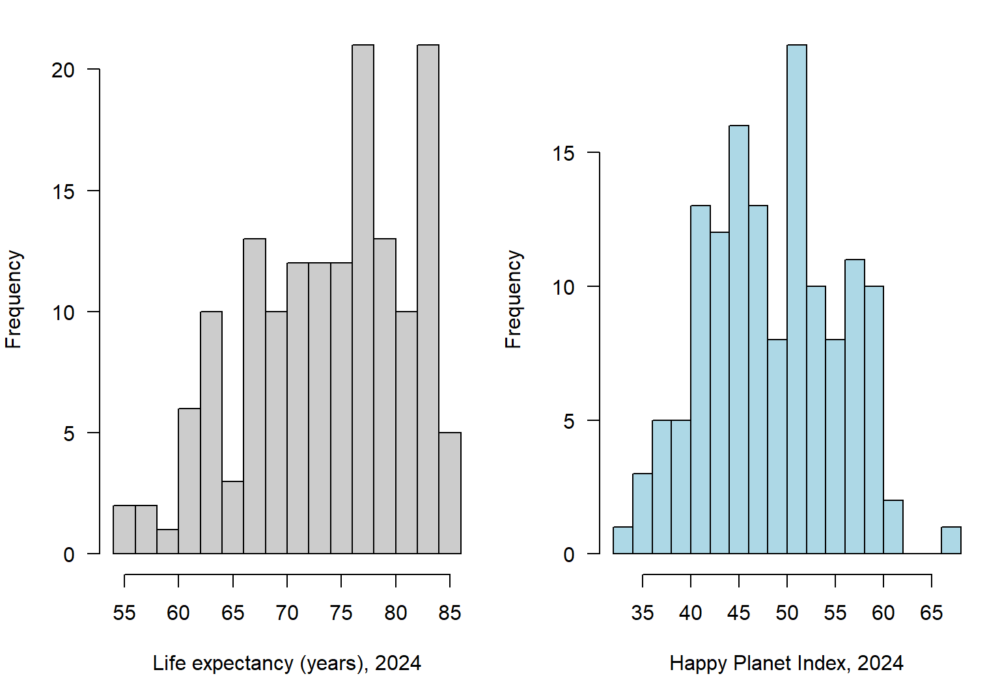
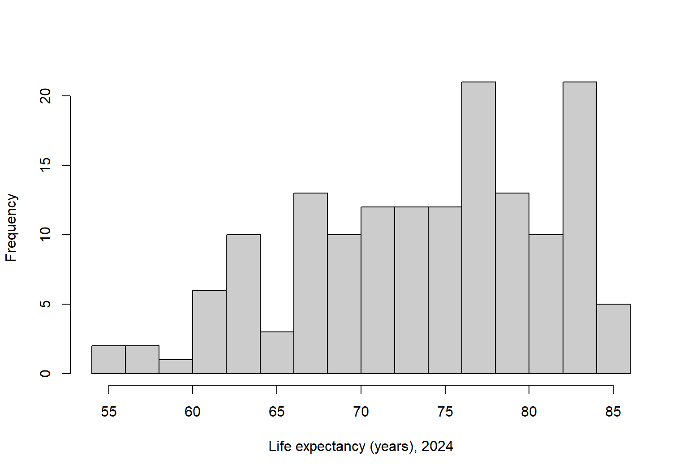
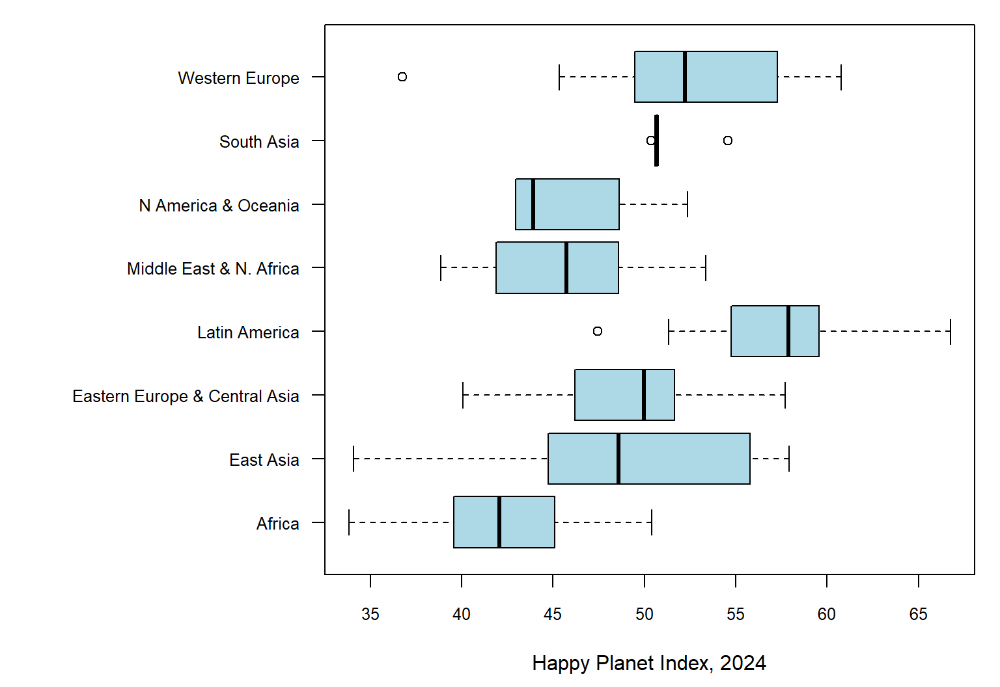
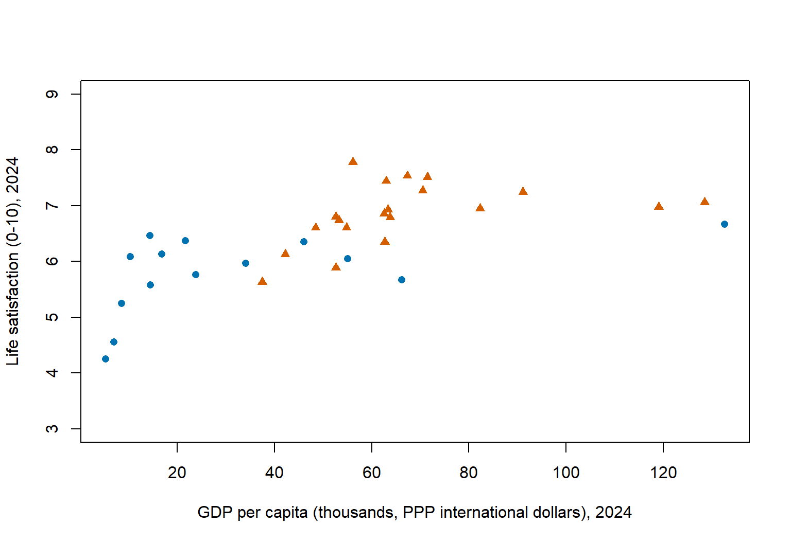
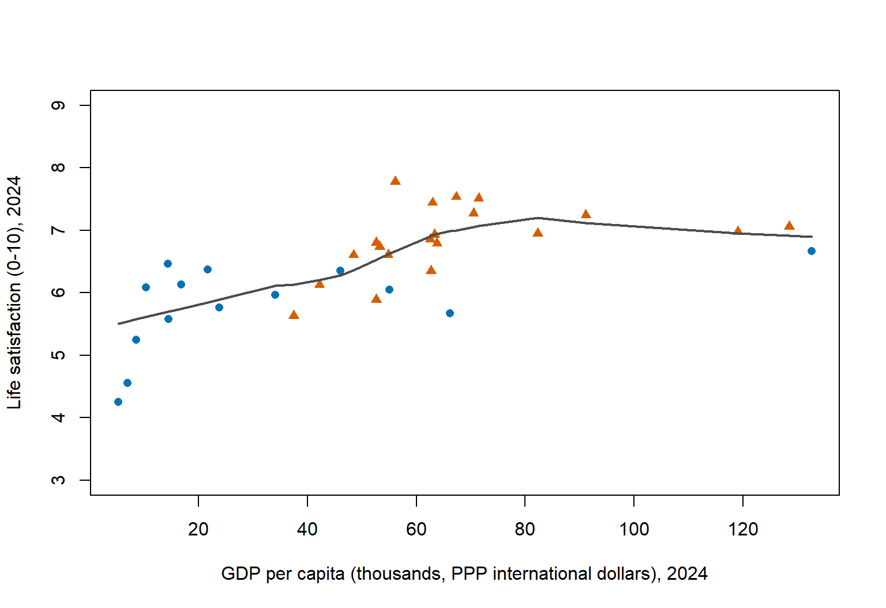
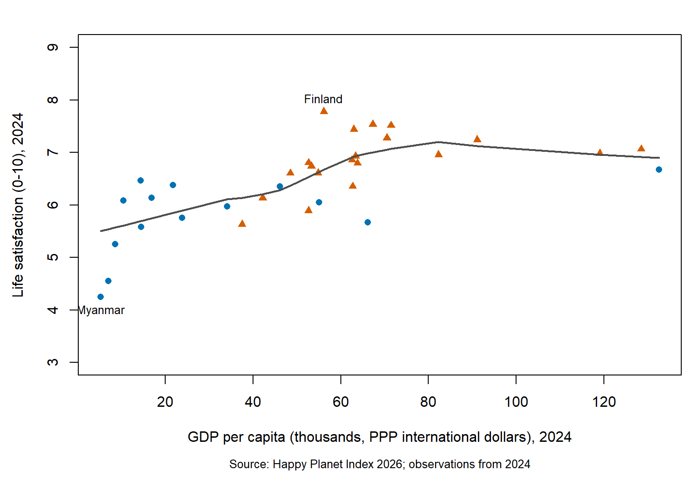
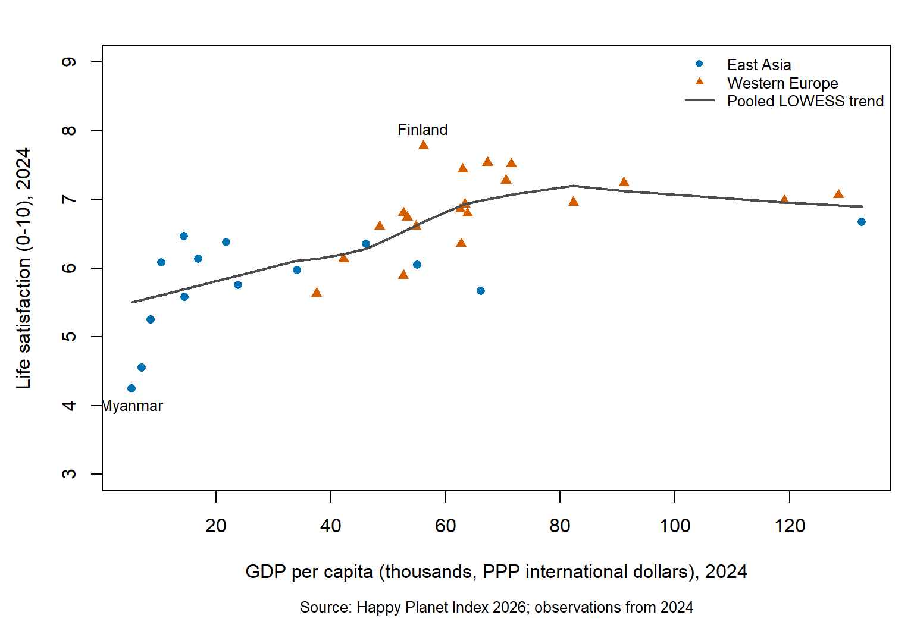

The data come from the Hot or Cool Institute’s Happy Planet Index 2026 public data set, available through the Happy Planet Index website. The source workbook covers 2006–2025; I use 2024 because it is the most recent year with observations for every variable, whereas GDP is entirely missing in 2025. The 2024 extract contains 153 countries, with missing values for life satisfaction (12), HPI (16), GDP (6), and ecological footprint (4); HPI rank is also missing for 16 countries, while life expectancy has no missing values. Each figure uses the available observations for its own variables, so choosing 2024 does not mean that every country has complete data.
Table 1: First rows of the 2024 extract used throughout this page.
country
continent
life_exp
life_sat
footprint
hpi
gdp
Afghanistan
South Asia
66.29
NA
0.79
NA
NA
Albania
Eastern Europe & Central Asia
79.78
5.58
2.38
55.85
21641.07
Algeria
Middle East & N. Africa
76.47
5.63
2.75
51.61
15501.92
Argentina
Latin America
77.54
6.54
2.68
58.31
26771.97
Armenia
Eastern Europe & Central Asia
75.85
5.42
2.75
49.83
20078.78
Australia
N America & Oceania
84.07
6.86
7.86
42.97
60303.98
1. Working through Murrell’s chapter 1 code
The opening examples helped me understand the difference between starting a plot and adding to one. A high-level call such as plot() normally creates a new plot, establishes coordinates, and draws the data, axes, frame, and labels. The scatterplot panel in the standard-plot examples separates these steps: plot.new() opens a blank plot, plot.window() establishes the coordinate ranges, and low-level calls supply the lines, points, axes, frame, and text. This makes the work that a single plot() call normally handles much easier to see.
par() changes the graphics settings rather than drawing observations. For example, mfrow determines how subsequent plots share the device, mar reserves space around each plot, and las controls the orientation of axis labels. These changes become visible when the relevant elements are drawn. Saving the previous settings and restoring them afterward matters because otherwise a later plot may inherit margins, colors, or a layout intended for an earlier example.
The order of commands is especially important in base graphics. My notes initially described the text as simply not appearing when text() came before plot(), but the more precise explanation depends on the device state: without an existing plot, text() produces an error; with one, it adds text to that plot, which a subsequent high-level call can replace. Base graphics draws onto the current device as commands execute, so changing an earlier element usually means drawing the plot again. In ggplot2, layers and settings are normally assembled into a plot object before that object is printed.
Two examples corrected my initial interpretation of the code. In the histogram, freq = FALSE puts the bars on a probability-density scale so that the dnorm() curve uses the same units; a density curve over a count histogram would usually appear compressed near the baseline. Also, boxplot() normally starts a new plot, but boxplot(add = TRUE) adds boxes to the existing coordinates. The function’s behavior therefore depends on its arguments, and the two offset sets of boxes can appear side by side without erasing each other.
The bar-chart example showed that a plotting function can also return useful information. barplot() returns the bar midpoints, which the later mtext() and text() calls use to align labels with the bars. This also clarified the difference between text positioned in the margins and text placed at data coordinates inside the plot. For the surface example, theta changes the horizontal viewing direction, phi changes the viewing elevation, and expand controls the relative height of the surface.
My recorded work covers the introduction and standard base-graphics examples. The notes do not document completed runs of the later lattice, ggplot2, or other package-dependent sections, so I do not report those sections as completed. Those examples require additional plotting systems, packages, or image resources; the discussion here is limited to what the base-graphics notes support.
2. The plotting functions
Each function below is used on the 2024 Happy Planet Index data. The code that produced every figure is shown with it. The final five examples build up the same GDP–life satisfaction comparison, redrawing the plot in each chunk so that every figure is reproducible.
2.1 Setting up the canvas
par()
op <-par(mfrow =c(1, 2), mar =c(4.5, 4, 1, 1), las =1)hist(hpi$life_exp, breaks =12, col ="grey80", main ="",xlab ="Life expectancy (years), 2024")hist(hpi$hpi, breaks =12, col ="lightblue", main ="",xlab ="Happy Planet Index, 2024")par(op)

Figure 1: par() draws nothing itself: it sets the layout, margins, and axis-label orientation that later calls use, which only becomes visible once the two histograms are drawn into the 1 x 2 layout.
Figure 3: axis() adds axes to an existing plot and controls their sides, tick positions, labels, and label orientation.
2.2 Drawing whole plots
hist()
hist(hpi$life_exp, breaks =12, col ="grey80", main ="",xlab ="Life expectancy (years), 2024")

Figure 4: hist() starts a new plot and groups life expectancy into bins whose bar heights show the number of countries in each interval.
boxplot()
op <-par(mar =c(4.5, 13, 1, 1))boxplot(hpi ~ continent, data = hpi, horizontal =TRUE,las =1, col ="lightblue", main ="", ylab ="",xlab ="Happy Planet Index, 2024", cex.axis =0.8)par(op)

Figure 5: boxplot() compares regional HPI distributions through medians, quartiles, whiskers extending to observations within 1.5 interquartile ranges, and points beyond the whiskers.
Figure 6: pie() shows each region’s share of the 153 country records as a slice, although a bar chart would make comparisons easier because lengths are easier to compare than angles or areas.
Figure 7: persp() projects a grid of fitted HPI values into a three-dimensional surface with a chosen viewing angle; this illustrative linear-model surface is not raw country data or the HPI formula, and some grid combinations may lack observations.
Life expectancy is measured in years and ecological footprint in global hectares per person. The fitted surface is a descriptive graphics demonstration, not a causal model.
2.3 Adding to an existing plot
points()
scatter <- hpi[complete.cases(hpi[c("gdp", "life_sat")]) & hpi$continent %in%c("East Asia", "Western Europe"), ]scatter$gdp_thousands <- scatter$gdp /1000regions <-c("East Asia", "Western Europe")region_colors <-c("#0072B2", "#D55E00")region_symbols <-c(16, 17)group_id <-match(scatter$continent, regions)# Reuse the same background and points in the following examples.draw_scatter <-function() {plot(scatter$gdp_thousands, scatter$life_sat, type ="n",xlab ="GDP per capita (thousands, PPP international dollars), 2024",ylab ="Life satisfaction (0-10), 2024", ylim =c(3, 9))points(scatter$gdp_thousands, scatter$life_sat,col = region_colors[group_id], pch = region_symbols[group_id])}draw_scatter()

Figure 8: points() adds country observations to an existing coordinate system, using blue circles for East Asia and orange triangles for Western Europe.
lines()
trend <-lowess(scatter$gdp_thousands, scatter$life_sat)draw_scatter()lines(trend, col ="grey30", lwd =2)

Figure 9: lines() connects ordered coordinates on an existing plot, here adding a LOWESS trend for the two displayed regions pooled together.
Figure 10: text() places country labels at data coordinates inside the existing plot, here identifying the highest and lowest life satisfaction among the displayed countries.
mtext()
op <-par(mar =c(6, 4.5, 2, 1))draw_scatter()lines(trend, col ="grey30", lwd =2)add_country_labels()mtext("Source: Happy Planet Index 2026; observations from 2024",side =1, line =4.5, cex =0.8)par(op)

Figure 11: mtext() adds a source note in the plot margin using a side and line offset, whereas text() positions labels using data coordinates.
legend()
op <-par(mar =c(6, 4.5, 2, 1))draw_scatter()lines(trend, col ="grey30", lwd =2)add_country_labels()mtext("Source: Happy Planet Index 2026; observations from 2024",side =1, line =4.5, cex =0.8)legend("topright", legend =c(regions, "Pooled LOWESS trend"),col =c(region_colors, "grey30"), pch =c(region_symbols, NA),lty =c(NA, NA, 1), lwd =c(NA, NA, 2), bty ="n", cex =0.8)par(op)

Figure 12: legend() explains the colors, point symbols, and fitted line used in the existing plot.
A note on names()
names() is not a plotting function: it reads or sets an object’s names attribute, which functions such as pie() and barplot() can use as labels. It belongs to data preparation rather than drawing on a graphics device.
References
Murrell, Paul. 2019. R Graphics. Third edition. Boca Raton: Chapman & Hall/CRC.
I used two AI tools for this assignment. Claude (Anthropic), in the Claude desktop app, helped me plan the assignment, build the line-by-line note template for Murrell’s chapter 1 code, check my answers to the questions in those notes, extract the 2024 subset of the Happy Planet Index workbook into hpi2024.csv (including the mapping from the workbook’s numeric continent codes to region names), and scaffold the structure of this page. Codex (OpenAI) turned my notes into an English draft, corrected misunderstandings about base graphics, and wrote the R plotting examples and figure captions from that scaffold. The observations in Section 1 come from my own line-by-line runs of the code; the wording, the plotting code, and the illustrative fitted surface were developed with AI assistance. I used AI to clarify the graphics concepts, to express my observations in English, and to keep the examples reproducible.
The full log of my exchange with Claude for this assignment is available here: Assignment 2: AI Use Log.